![Figure 11(b): a photo, on black, of the prototype: a frame of silver links rising from a clear acrylic base, a linear module with a servo motor on the left, two more motors behind the base, and on the right a vertical screw carrying a white holder with three grey spheres. Yellow labels name the servo motor, the linear module, a capstan wheel, the servo motors and the RCM point; blue arrows mark a frame u, v, w at T on the holder and the axes x, y, z at the RCM point, where a red dashed line along the screw meets another from the base.](fig-11-prototype.webp)
The idea
Rolling, spinning and insertion
about one fixed point.
A planar mechanism moves its end-effector about a fixed point far from its base, its remote center of motion (RCM): the end-effector rolls about the RCM point, spins about its own axis through it, and slides along that axis for insertion. These are two rotations and one translation, 2R1T.
It is driven by three linkages with one degree of freedom each, one motor per linkage. A dual-triangular linkage rolls the end-effector; two Peaucellier–Lipkin straight-line linkages move two nuts along its axis, where a dual-helical joint turns their motions into spinning and insertion. Rolling is decoupled from spinning and insertion, and the kinematics are in closed form. On a preliminary prototype, measured in 121 configurations, the end-effector's axis passed on average 0.54 mm from the RCM point. With a revolute joint added for pitch, the design can be extended to a spatial 3R1T mechanism, with potential application in robot-assisted minimally invasive surgery.
01 / Background
Minimally invasive surgery
needs four motions about one point.
What must an RCM mechanism provide, and where do existing ones fall short?
In minimally invasive surgery, a surgical instrument enters the body through a small incision and moves about the incision point (Fig. 1): it rolls and pitches about the point, spins about its own axis, and slides along it for insertion. These are four motions, three rotations and one translation: 3R1T. RCM mechanisms provide them by constraining the end-effector mechanically to a fixed point far from the mechanism's fixed base.
Many RCM mechanisms have been proposed, from planar linkages built on parallelograms to spatial parallel mechanisms. Most have fewer than four degrees of freedom, so extra actuators must be mounted on the end-effector to reach 3R1T; the structure becomes complex, and the inertia of the moving parts rises considerably. The few fully parallel mechanisms with four degrees of freedom keep all their actuators on the fixed base, but their parallel structure takes up much space.
Pitch can come from a revolute joint on the fixed base, driven directly. This design therefore covers the other three motions, rolling, spinning and insertion (2R1T), with a planar mechanism, and splits them among simple linkages with one degree of freedom each.
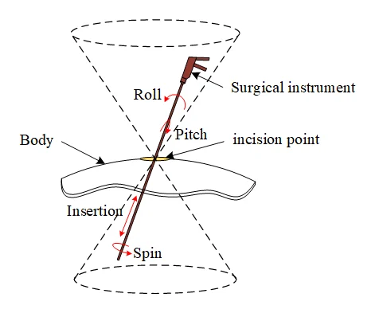
02 / Mechanism design
Rolling from one linkage,
spinning and insertion from two.
Which part of the mechanism makes which motion?
The mechanism is built from three subchains (Fig. 2). A dual-triangular linkage, mounted on the fixed base, rolls the end-effector about the RCM point, about the z-axis. Two identical straight-line linkages, carried at the distal end of the dual-triangular linkage, move along one line through the RCM point. On that line, a dual-helical joint turns their two translations into the end-effector's spinning about the line and insertion along it.
The straight-line linkages move independently of the dual-triangular linkage, so the end-effector's rolling is decoupled from its spinning and insertion, which eases the kinematic control. And the dual-helical joint relates spinning and insertion to its two inputs by a constant transmission ratio, which simplifies the control further.
![Figure 2: on the left, a rendering of the mechanism: a light green linkage of parallelograms rising from a grey base, a yellow platform at its top, and a blue and a red rhombus-shaped linkage reaching to an orange screw that runs down through the RCM point, where x, y and z axes meet; arrows mark roll about the point, insertion and spin along the screw, the direction of the end-effector with its u, v, w frame, and pitch about the dashed line through the base. On the right, the parts drawn apart: the dual-triangular linkage in green, a straight-line linkage in blue and one in red, and the dual-helical joint, an orange screw with a right-hand and a left-hand thread and two green nuts.](fig-2-concept.webp)
The dual-triangular linkage is an eight-bar linkage with a symmetric structure (Fig. 3). With eight links and ten joints, its mobility is f = 3 × (8 − 1) − 2 × 10 = 1: one degree of freedom. Its configurations stay symmetric about the line ED, and the triangles OAD and OBE stay similar, so the line DE always passes through the point O, the RCM point; by the symmetry, so does the distal link HG. Since all its links stay far from O, the linkage is widely used to roll the end-effector of RCM mechanisms. Here the distal link HG is replaced by a platform IKG that carries the straight-line linkages, with IK as their base: they move along the line OT, perpendicular to IK through O, which turns purely about O as the linkage moves.
The dual-helical joint realizes a cylindrical drive, or C-drive (Fig. 4): a differential mechanism that turns two collinear translations, of two nuts on one screw, into a rotation and a translation about the same axis. Ideally its two helical joints have opposite pitches, equal in size and of opposite hand: when the nuts move in the same direction at the same rate, the screw translates; when they move in opposite directions, it rotates. It works whenever the two pitches differ. In the prototype, one pitch is zero, which turns that helical joint into a revolute joint, simple to build with ball bearings.
Each nut is driven along the axis by a Peaucellier–Lipkin straight-line linkage (Fig. 5), an eight-bar linkage with one degree of freedom as well. When its crank IR turns, its output point P moves on an exact straight line perpendicular to its base link IK, provided its link lengths satisfy lIR = lIK, lKM = lKN and lPM = lPN = lRM = lRN. Its base link is the platform's IK, so P moves along OT, through the RCM point. Two identical straight-line linkages drive the two nuts (Fig. 7); since their outputs lie on the axis of the dual-helical joint, their transmission angle stays at 90° in theory, and force passes well from the cranks to the joint.

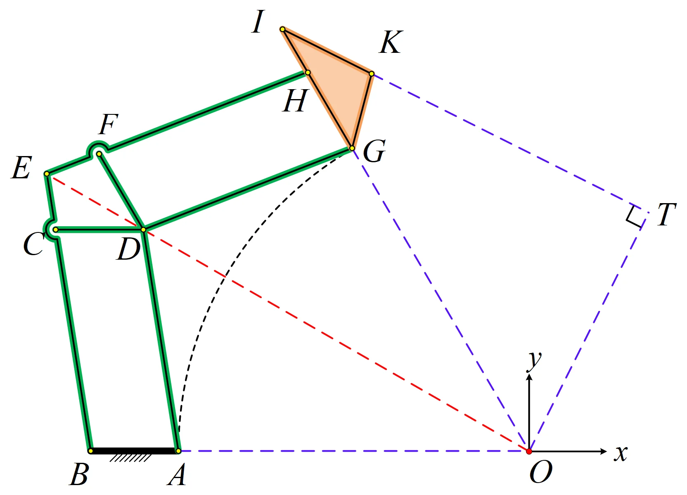


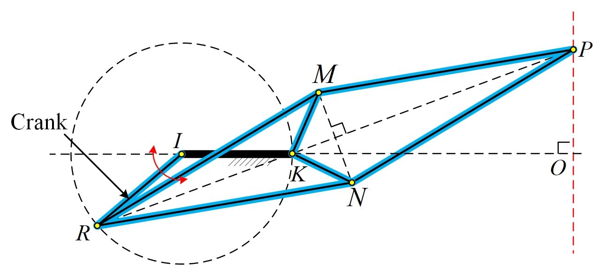
03 / Kinematics
Closed-form kinematics,
linkage by linkage.
How do the three drives set the end-effector's motion, and back?
The mechanism has three inputs, the drive angles θ0 of the dual-triangular linkage and θ1, θ2 of the two straight-line linkages, and three outputs, the end-effector's rolling angle θ, spinning angle φ and insertion l (Fig. 6). Since each motion comes from its own simple linkage, both the forward and the inverse kinematics are found linkage by linkage, in closed form.
Rolling depends on the dual-triangular linkage alone. Its distal link turns purely about the RCM point, by an angle α that is twice the angle ∠BOE: α = 2 arctan [l1 sin θ0 / (l0 − l1 cos θ0)], where l0 and l1 are the lengths of links OB and BE. The rolling angle θ is α plus a constant offset α0, the angle ∠IOT.
Spinning and insertion depend on the straight-line linkages alone. Each moves its nut along OT, to a distance from T of di = l2 tan (θi/2), with l2 the fixed distance from K to T. The dual-helical joint turns the two nut positions into the spinning angle and the insertion through a constant 2 × 2 matrix set by its pitches p1 and p2, its transmission ratio.
The inverse kinematics are just as direct: θ0 follows from the rolling angle, the nut positions from the spinning angle and the insertion through the inverse of that matrix, and each crank angle from its nut's position, all in closed form. The Jacobian that relates the speeds of the drives to those of the end-effector is block diagonal, a 1 × 1 block for rolling and a 2 × 2 block for spinning and insertion: rolling is decoupled from the other two motions, and every entry of the Jacobian is explicit.
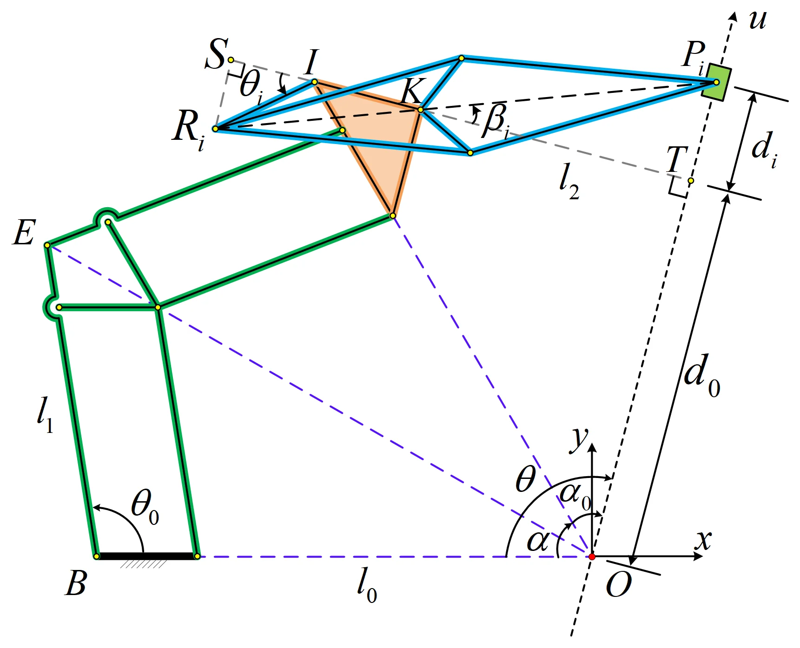
04 / Singularities and workspace
Singular only where
a linkage reaches a dead point.
Where can the mechanism not be controlled, and how far can it roll and insert?
A mechanism is singular where its Jacobian loses rank. Here the Jacobian is block diagonal, so the mechanism is singular only where the dual-triangular linkage or a straight-line linkage reaches a dead point. The dual-helical joint adds no singularity: its two pitches differ, so its transmission ratio is constant and invertible.
The dual-triangular linkage reaches its dead point at θ0 + ½α = ½π, the limit of its motion (Fig. 8). At θ0 = π it would fold into a line and could not be controlled either, but its links interfere before that. The crank of each straight-line linkage is a rocker that cannot turn fully: it moves between two dead points, symmetric about the base link IK and set by the link lengths (Fig. 9). Choosing the link lengths for the ranges of motion needed keeps these positions out of the way.
Between these limits lies the reachable workspace (Fig. 10). The rolling angle covers θ ∈ [α0, α0 + α]: its stroke α is set by the ratio l1/l0 alone, and the angle α0 offsets it. With one pitch zero, p1 = 0, a difference of p2 between the two nuts is reserved for a full turn of spin, so the insertion stroke shrinks to 2d − p2, where d is the straight-line linkages' travel limit along the end-effector; the initial position d0 offsets it. The link lengths and pitches can be chosen for the ranges a task needs.

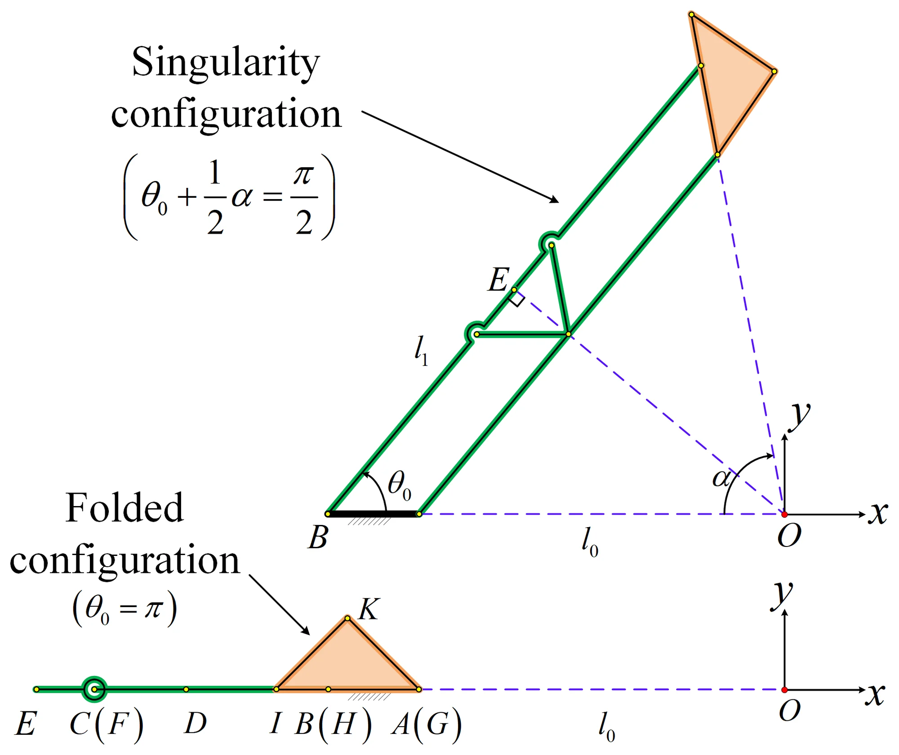

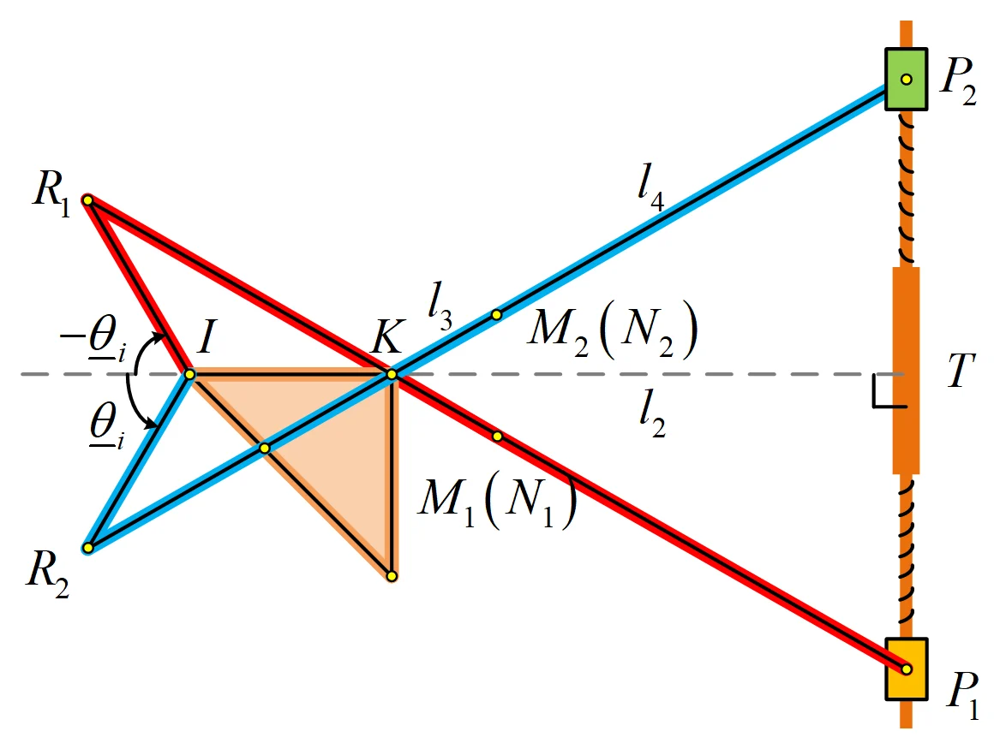
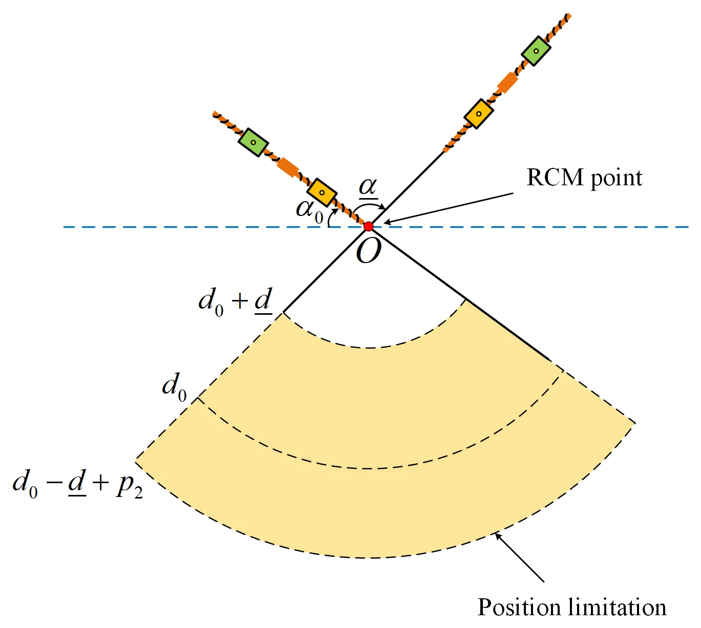
05 / Prototype
A preliminary prototype,
with every motor on the base.
How was the prototype built, driven and measured?
A scaled-down prototype was designed and built from easy-to-access materials with simple fabrication methods (Fig. 11). Coupling-supported structures stiffen its links while keeping their inertia low, parts with complex shapes are 3D-printed plastic, and a commercial ball screw and nut form the dual-helical joint.
A planar slider-crank mechanism drives the input θ0 of the dual-triangular linkage; its slider is moved by a linear module with a Maxon RE40 servo motor. The cranks of the straight-line linkages are driven by cables, with capstan wheels carrying the motors' rotation to them. All motors therefore sit on the base frame, and the moving links stay light.
An OptiTrack motion-capture system measures the end-effector's pose from three spherically mounted reflectors, M1, M2 and M3, set in an equilateral triangle on a plane perpendicular to the end-effector's axis. They define a tool frame {T}: its origin at their center, its v-axis normal to their plane, its u-axis through M1. The end-effector's rolling, spinning and insertion are read from this frame.
The kinematic parameters were found for a prescribed workspace (Table 1): rolling over 70°–120° and insertion over 200–250 mm, with the pitches set to p1 = 0 mm and p2 = 20 mm. The straight-line linkages' range covers the 20 mm pitch difference, so the end-effector can spin through full turns. The prototype was not made for a specific procedure: it is a preliminary check of the design, and its workspace may well be smaller than actual minimally invasive surgery requires.

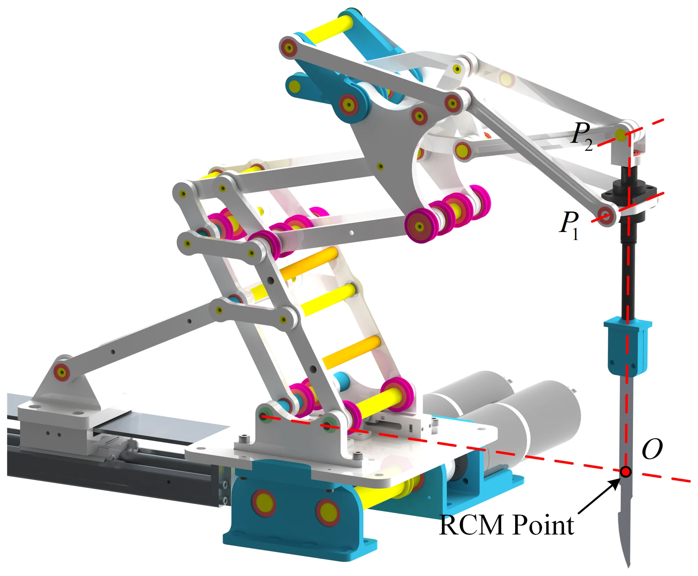
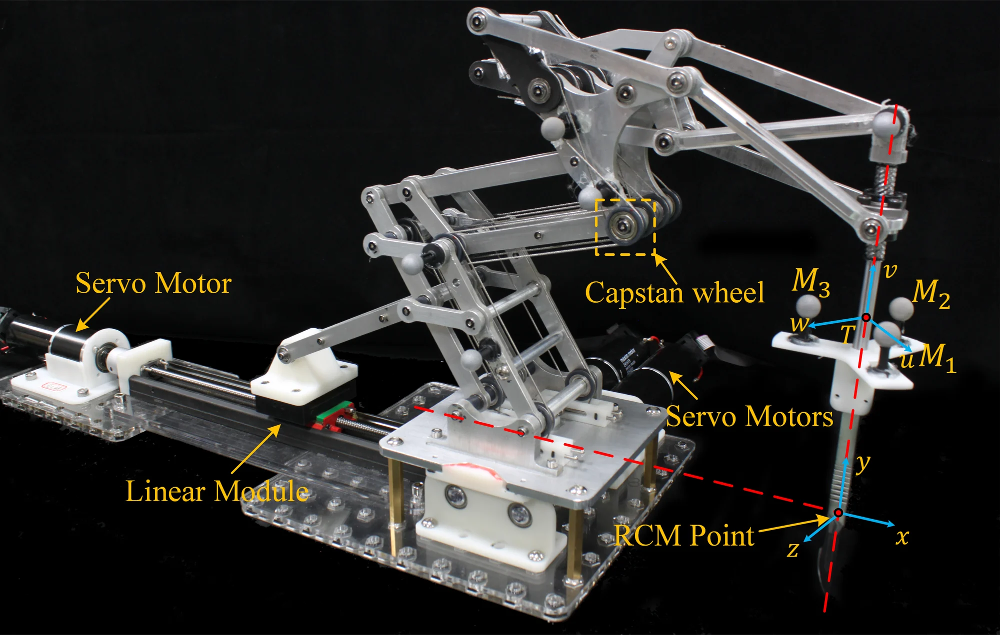
| Parameter | l0 | l1 | l2 | l3 | l4 | r | α0 |
|---|---|---|---|---|---|---|---|
| Value | 225 mm | 143.75 mm | 127.28 mm | 30 mm | 116.74 mm | 1.25 | 45° |
06 / Experimental validation
Accuracy and repeatability
over 121 configurations.
How closely does the prototype keep its end-effector on the RCM point?
For the validation, the prescribed workspace was discretized: the rolling range, 70°–120°, into 11 orientations in steps of 5°, and for each orientation the insertion range, 200–250 mm, into 11 positions in steps of 5 mm, which gives 11 × 11 = 121 configurations. The inverse kinematics gave each configuration's motor inputs, and a protocol between the motor controller and the OptiTrack system actuated and measured them automatically.
In theory, the end-effector's axis passes exactly through the nominal RCM point in every configuration; manufacturing and assembly errors leave no exact common point (Fig. 13). Over the 121 configurations, the axis passed the nominal RCM point at a mean distance of 0.54 mm, and 1.21 mm at most. The rolling angle was off by 0.20° on average and 0.49° at most, evenly across the workspace. The insertion was off by 1.02 mm on average and 1.99 mm at most, mainly because of the transmission error of the cable drives of the straight-line linkages, which is larger than that of rigid linkages. The repeatability was 0.17 mm on average and 0.62 mm at most.

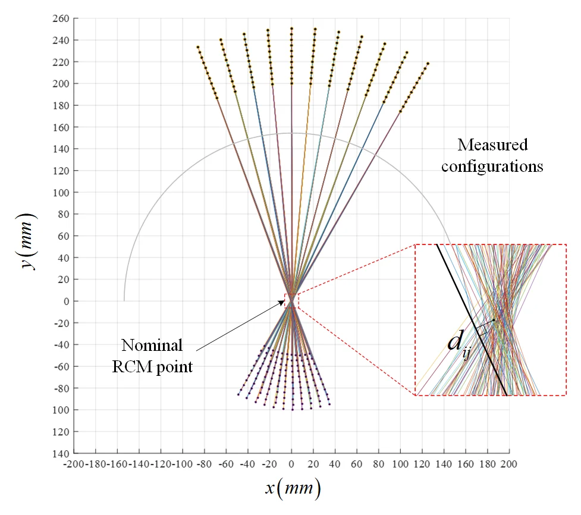

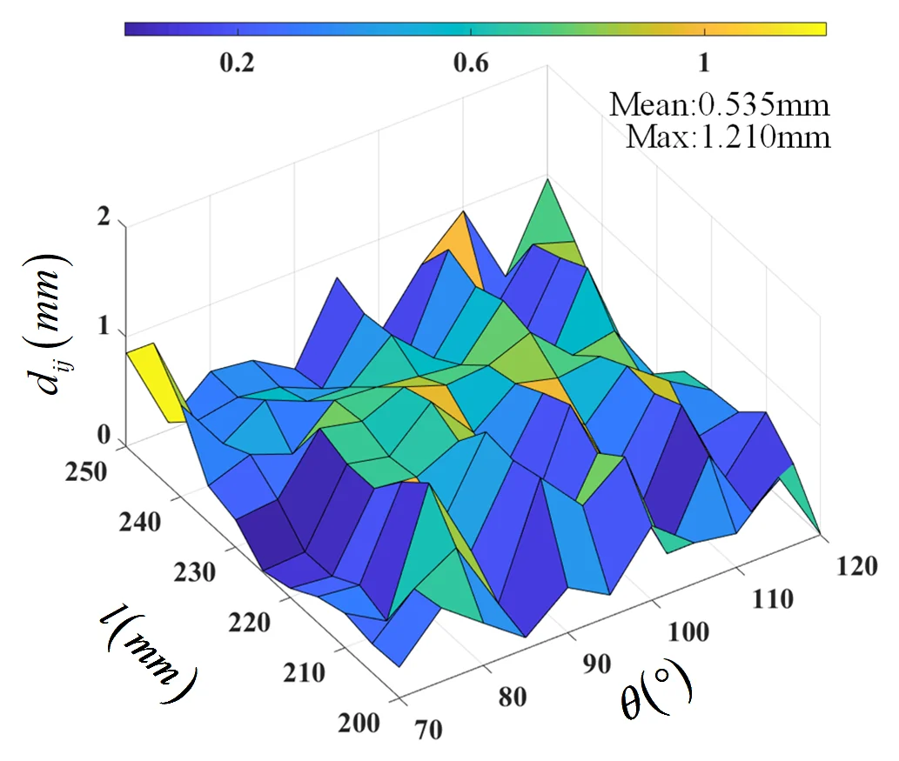

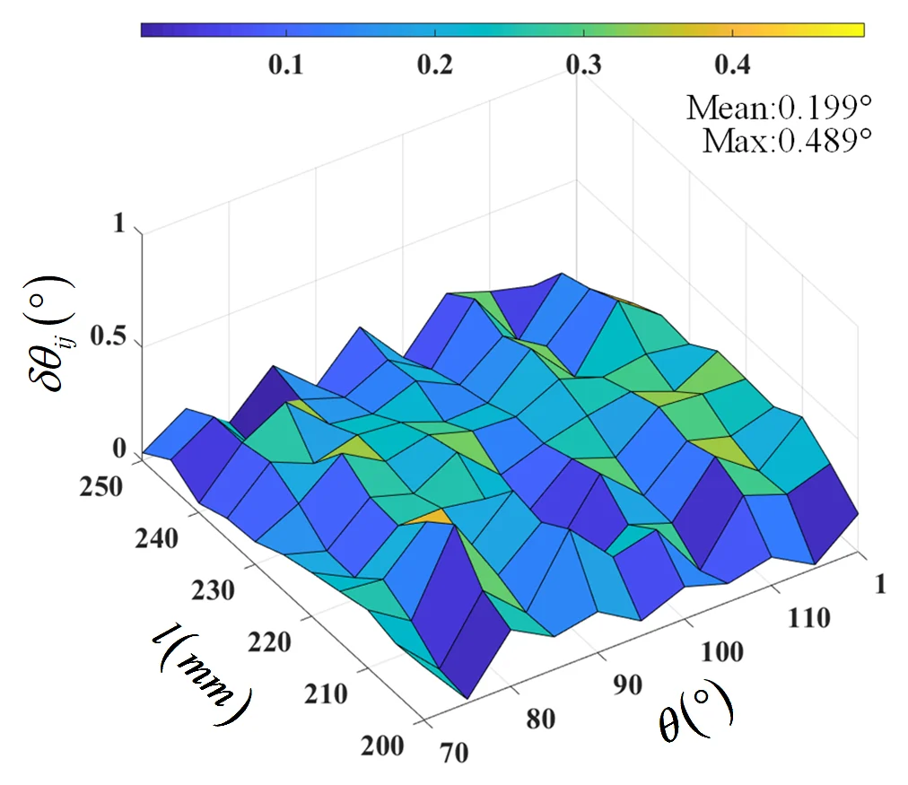

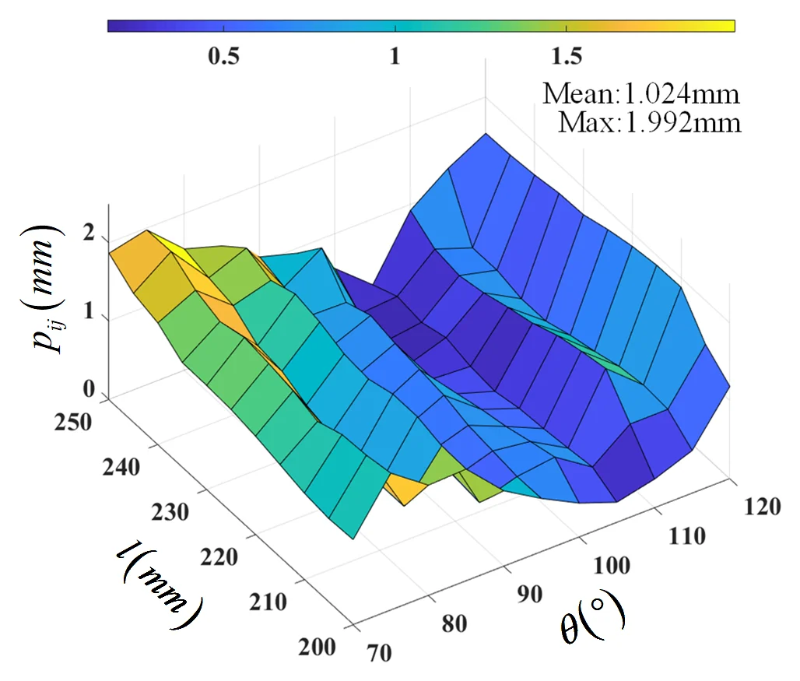

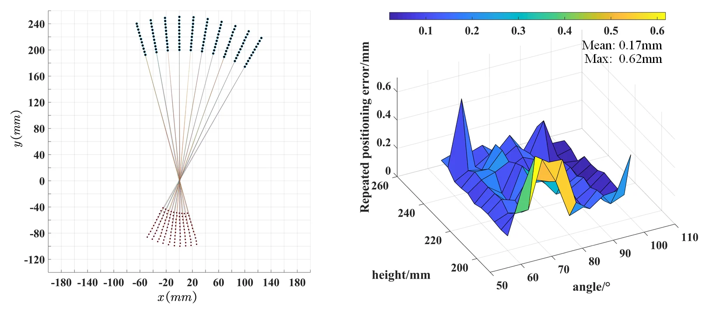
Limits remain. A few extreme configurations could not be reached, because the linkages and the cable drives interfere mechanically. Manufacturing and assembly errors also mean that the positioning accuracy is not yet as high as actual minimally invasive surgery requires: the prototype is a preliminary one, built to check that the design works. Better prototypes for specific procedures, made with high-performance materials and precise fabrication, and a kinematic calibration that compensates for the manufacturing and assembly errors, are left to future work.
Questions & answers
Common questions.
What is a remote center of motion?
A fixed point, far from the mechanism's base, about which the end-effector moves: the mechanism itself keeps the end-effector's axis passing through that point. In minimally invasive surgery, the instrument has to roll, pitch and spin about the incision point and slide through it (Fig. 1), and an RCM mechanism provides such motion mechanically.
Why split the motion among three linkages?
The motion then comes from simple planar linkages with one degree of freedom, each driven by its own motor and each with closed-form kinematics. The forward and inverse kinematics of the whole mechanism follow linkage by linkage, rolling is decoupled from spinning and insertion, and the only singularities are the dead points of the single linkages, which the choice of link lengths keeps out of the workspace.
Why a Peaucellier–Lipkin straight-line linkage?
Its output point moves on an exact straight line as its crank turns. Mounted so that this line is the end-effector's axis, it moves a nut of the dual-helical joint along that axis; and since its output lies on the axis, its transmission angle stays at 90° in theory, so force passes well from the crank to the joint.
How accurate is the prototype?
Over 121 configurations, the end-effector's axis passed the nominal RCM point at 0.54 mm on average and 1.21 mm at most; the rolling error was 0.20° on average and 0.49° at most, and the insertion error 1.02 mm on average and 1.99 mm at most, mostly from the cable drives. The repeatability was 0.17 mm on average and 0.62 mm at most. For a preliminary prototype built with easy-to-access materials and simple methods, the authors consider these errors acceptable; they are not yet the accuracy actual surgery requires.
How is pitch added for the full 3R1T motion?
With a revolute joint on the fixed base, driven directly; Fig. 2 marks the pitch about the line through the base and the RCM point. With it, the planar 2R1T design can be extended to a spatial 3R1T mechanism.
Paper & authors
A planar RCM mechanism
from simple linkages.
Design and Validation of A Novel Planar 2R1T Remote Center-of-motion Mechanism Composing of Dual-Triangular and Straight-Line Linkages
Genliang Chen, Yuanhao Xun, Yuchen Chai, Siyue Yao, Chao Chen, and Hao Wang.
Journal of Mechanisms and Robotics, 2021.
Citation / BibTeX
@article{chen2021rcm,
title = {Design and Validation of A Novel Planar {2R1T} Remote Center-of-motion Mechanism Composing of Dual-Triangular and Straight-Line Linkages},
author = {Chen, Genliang and Xun, Yuanhao and Chai, Yuchen and Yao, Siyue and Chen, Chao and Wang, Hao},
journal = {Journal of Mechanisms and Robotics},
pages = {1--11},
year = {2021},
publisher = {ASME International},
doi = {10.1115/1.4052339}
}Full affiliations
- Shanghai Key Laboratory of Digital Manufacture for Thin-walled Structures, and State Key Laboratory of Mechanical System and Vibration, Shanghai Jiao Tong University, Shanghai, 200240, P.R. China
- Department of Mechanical and Aerospace Engineering, Monash University, Clayton, Victoria 3802, Australia
* Corresponding author: Genliang Chen